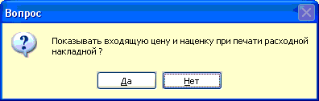
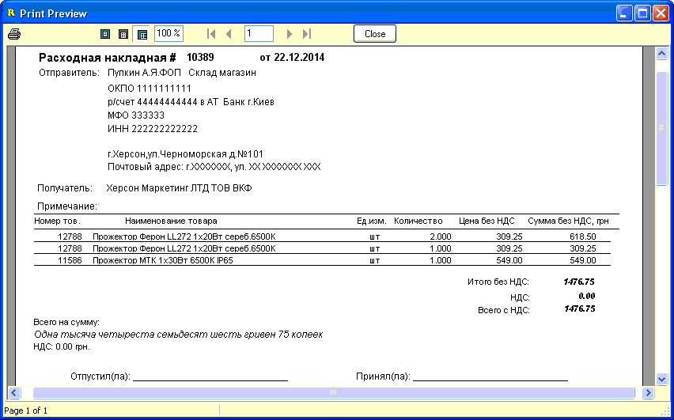

Расходную накладную можно распечатать только
после сохранения накладной перемещения, соответствующий вопрос будет
задан, если выбрать печать до сохранения или нажав горячее сочетание клавиш
Ctrl+P на клавиатуре.
Перед показом печатной формы будет также задан
вопрос о печати входящих цен в расходной накладной, естественно при печати для
клиента нужно нажать Нет.

Пример вывода на печать:

Также, иногда требуется печать ценников из
расходной накладной - для этого включите соответствующую опцию в настройках
программы на вкладке "Ценники".
Аналогично, но на вкладке "Налоговых накладные"
включается вывод на печать налоговых накладных после печати расходной
накладной.